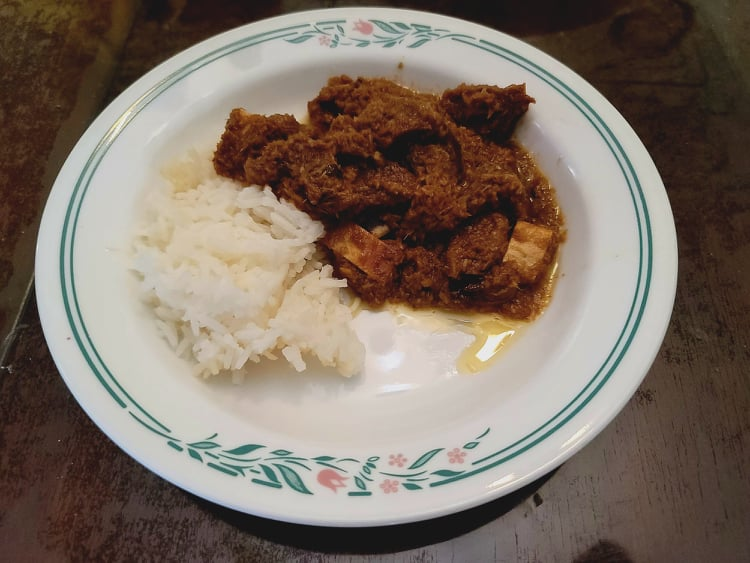

Rendang Daging (Beef Rendang)

Ingredients:
Curry paste:
- 6-12 Dried chilis, soaked in warm water and seeded
- 5 Shallots, halved
- 1 inch Galangal, peeled, thinly sliced
- 1 inch Ginger, peeled, chopped
- 5 cloves Garlic, roughly chopped
- 3 Lemongrass, thinly sliced
Beef Rendang:
- 1 1/2 - 2 lb Beef chuck OR Beef short rib, cubed
- 5 tbsp Canola oil
- 1 stick Cinnamon
- 3 Star anise
- 3 Cardamom, opened
- 3 Cloves
- 1 Lemongrass, cut into 4 inch pieces, pounded
- 1 cup Coconut milk
- 1 cup Water
- 2 tsp Tamarind paste
- 6 Kaffir lime leaves, thinly sliced
- 6 tbsp Kerisik, or toasted coconut
- 1 tbsp Sugar, or to taste
- 1 - 1 1/2 tsp Salt, or to taste
Instructions:
- Add the curry paste ingredients to a food processor and blend until smooth.
- Heat the oil in a large pot over medium. Add the spice paste, cinnamon, cloves, star anise, and cardamom and stir-fry until aromatic, about 2 minutes.
- Add the beef and the pounded lemongrass and cook until browned, about 2-3 minutes. Add in the coconut milk, tamarind paste, and water and simmer for a 4-5 minutes on medium heat, or until the beef is mostly cooked through.
- Add in the kaffir lime leaves, kerisik, and sugar and stir thoroughly. Lower the heat to low, cover the lid, and simmer for 1 - 1 1/2 hours or until the meat is very tender and the gravy has dried up. Then, mix in the salt and any additional sugar to taste. Serve over steamed rice.